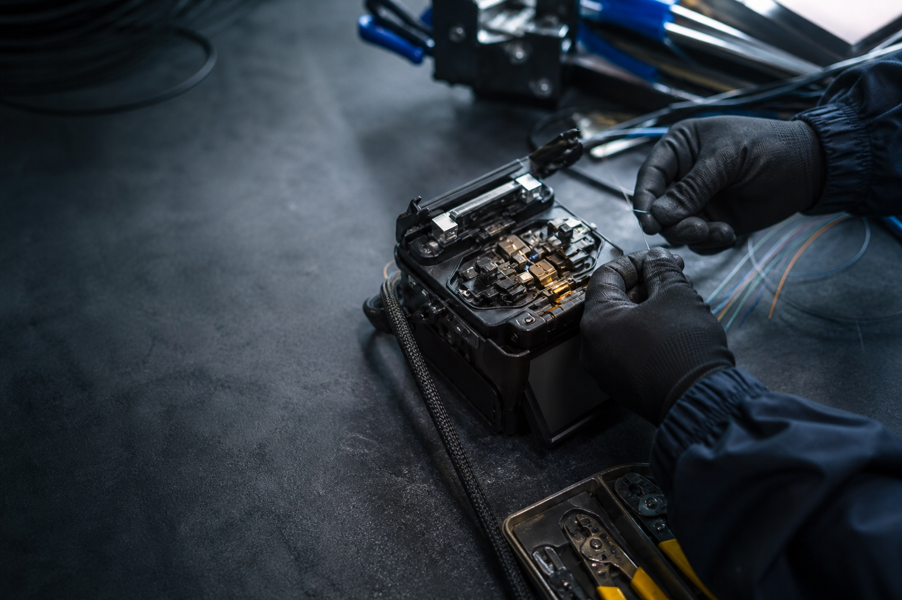

Монтаж ВОЛС
Прокладка кабеля, подготовка трассы, монтаж муфт и коммутационных элементов.
ВОЛС / монтаж / сервис
Монтаж, диагностика и ремонт волоконно-оптических линий для домов, предприятий и инфраструктурных объектов.

Что мы делаем
Подключаем, проверяем и возвращаем в работу оптические линии. Вы получаете понятный результат и рекомендации по дальнейшей эксплуатации.
Прокладка кабеля, подготовка трассы, монтаж муфт и коммутационных элементов.
Поиск повреждений и потерь с помощью рефлектометра и измерительного оборудования.
Точная сварка, укладка в кассеты и проверка качества соединений.
Локализуем неисправность, восстанавливаем линию и фиксируем причину сбоя.
Наш подход
Оптика не любит догадок. Перед началом уточняем схему, состояние линии и ограничения площадки. После работ передаём результат и рекомендации простым языком.
Без лишних обещаний
Фиксируем объём работ до выезда и заранее говорим, что потребуется на объекте.
Опираемся на измерения, а не на предположения о причине неисправности.
После работ оставляем линию в понятном состоянии и объясняем следующий шаг.
Частые вопросы
Да, если вы опишете объект, задачу и пришлёте схему или фотографии. Точную стоимость определим после уточнения объёма и состояния линии.
Да. Время и правила доступа согласуем заранее, чтобы не остановить работу объекта без необходимости.
Адрес объекта, краткое описание проблемы, известную длину линии и фотографии узлов, если они есть.
Контакты
Контактные данные сейчас временные. Перед публикацией заменим их на подтверждённые реквизиты компании.